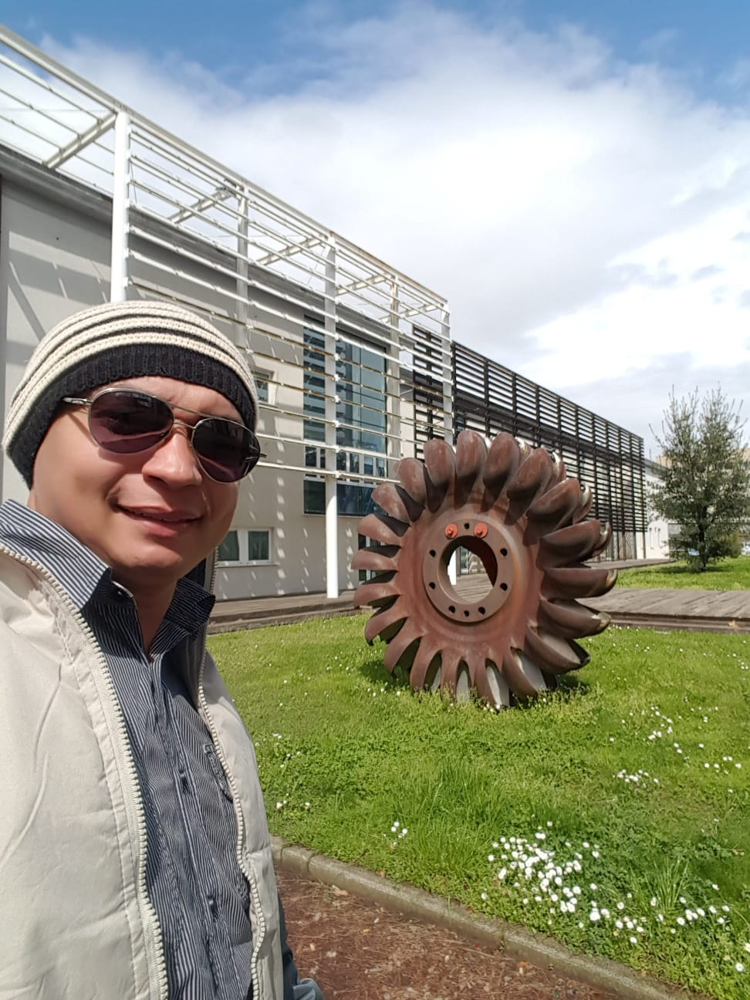

Sou Cicero Pierry Bezerra dos Santos, MSc
Brasileiro, Habilitação B, CREA-RN – 2123009270, CREA-PB – 41037PB
PCD: Membro superior esquerdo - CID 10: T92; G83.8
Mestre em Economia e Engenheiro Eletricista, Profissional com mais de 18 anos de experiência em gestão de contratos, operações e manutenção no setor elétrico, atuando em empresas de grande porte como ENEL e CONTROL Construções. Histórico sólido em negociações milionárias, gestão de equipes próprias e terceirizadas, análise de indicadores (KPI’s), melhoria de processos e rentabilidade de projetos. Reconhecido por resultados expressivos em recuperação de receitas, fechamento de contratos de alto valor e implementação de metodologias de eficiência operacional.
Formação Acadêmica
UNIVERSIDADE FEDERAL DO CEARÁ – MESTRADO ECONOMIA APLICADA
UNIVERSIDADE REGIONAL DO CARIRI – GRADUAÇÃO CIÊNCIAS ECONOMICAS
INSTITUTO FEDERAL DA PARAIBA (IFPB)/UNIVERSIDADE POTIGUAR (UNP) – ENGENHARIA ELÉTRICA
INSTITUTO FEDERAL DO CEARÁ – ELETROTÉCNICO
Formação Complementar
Facilitador no método de gestão da rotina, facilitador academia de lideres in company, formação em BPMN, auditor líder ISO 14.001, cursos de transformadores de força (manutenção e ensaios), inspeção em linhas de AT, equipamentos telecomandados e smartgrid, proteção e automação de SED’S e redes de MT, ensaios e testes elétricos e eletromecânicos, curso de FV (montagem e manutenção), curso de geração heliotérmica, engenharia da confiabilidade, técnicas manutenção PCM, Lean Manufacture, simulações ARENA (Teoria das filas).
Habilidades
| Comportamentais | Linguisticas | Informáticas |
|---|---|---|
| Comunicação em público, gestão de conflitos, desenvolvimento da equipe, empatia, flexibilidade, engajamento, dinamismo e inovação. | Inglês – Avançado; Espanhol – Avançado; Italiano – Básico. | C e C++ (avançado); R*(avançado); Excel (avançado); Power BI (avançado); Visual Básic (avançado); Word (intermediário); Power Point (Intermediário.); HTML5 (básico); Python (básico). |